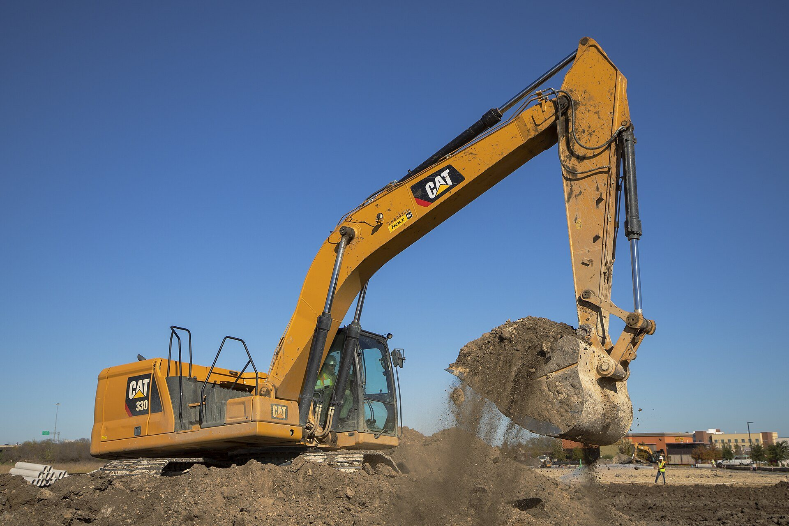
Dig, Dig, Dig!
All About Excavators

All About Excavators
Have you ever watched a giant machine scoop up a huge pile of dirt? That amazing machine is called an excavator! Some people call them diggers, and others call them mechanical shovels. Whatever you call them, excavators are some of the most powerful machines on Earth.
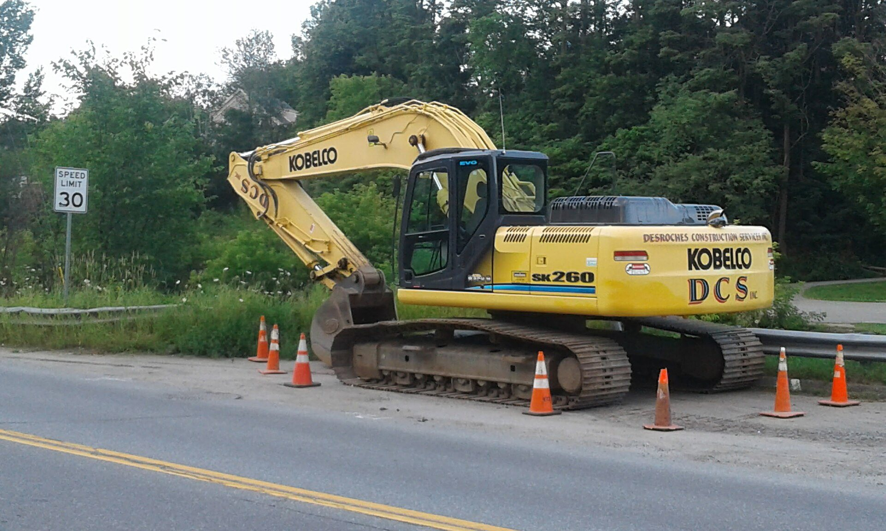
An excavator has four main parts. The undercarriage sits on the ground with tough tracks that help it crawl over mud and rocks. On top sits the house -- a platform that holds the engine, the cab, and heavy counterweights. The house can spin all the way around in a circle!
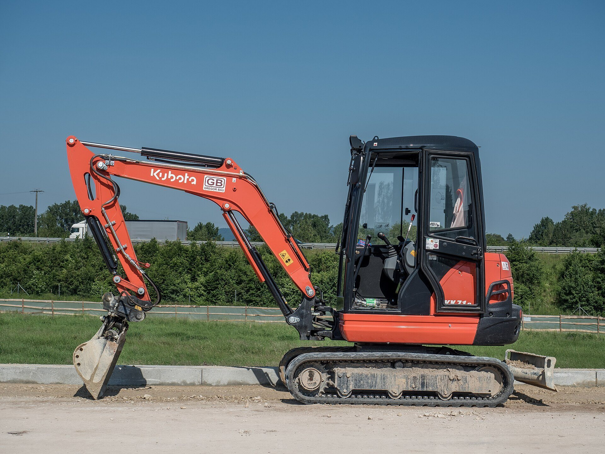
Sticking out from the house is the boom -- a long, strong arm that moves up and down. At the end of the boom is the stick, which reaches forward and pulls back. And at the very tip? The bucket! It scoops dirt, rocks, and sand just like you scoop sand at the beach.
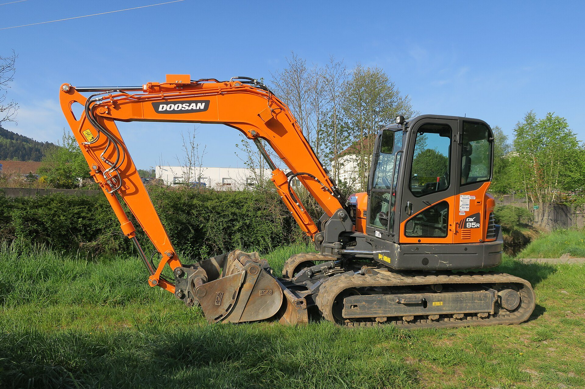
How does an excavator move such heavy loads? The secret is hydraulics! A powerful engine pumps oil through tubes at very high pressure. When that oil pushes against a piston, it creates enormous force -- enough to lift a car. That is how the boom, arm, and bucket move so smoothly.
Inside the cab, an operator uses two joysticks to control everything. One set moves the tracks forward and backward. The other moves the boom, arm, and bucket. It takes real skill to work all four controls at the same time!
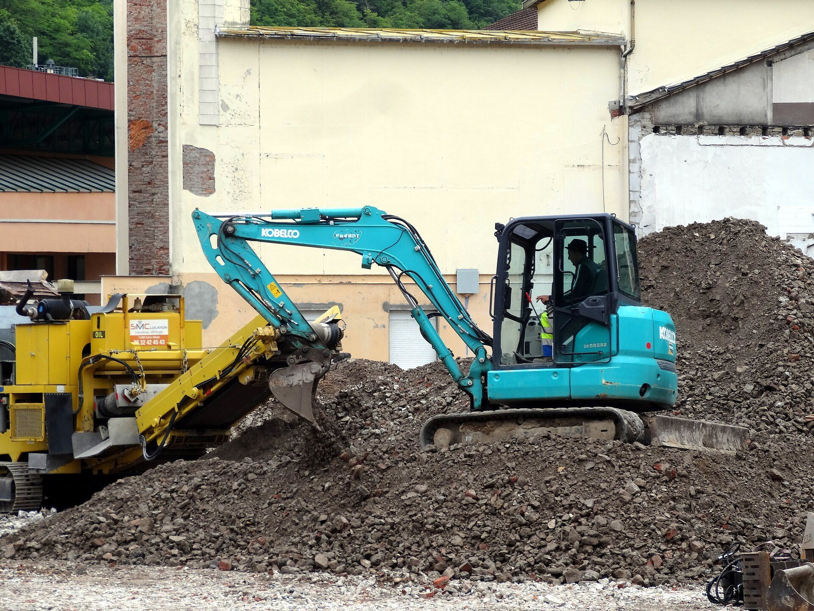
Excavators come in all sizes. Mini excavators are small enough to squeeze into backyards and narrow city streets. The smallest ones weigh about as much as a large horse! But the biggest excavators are true giants.
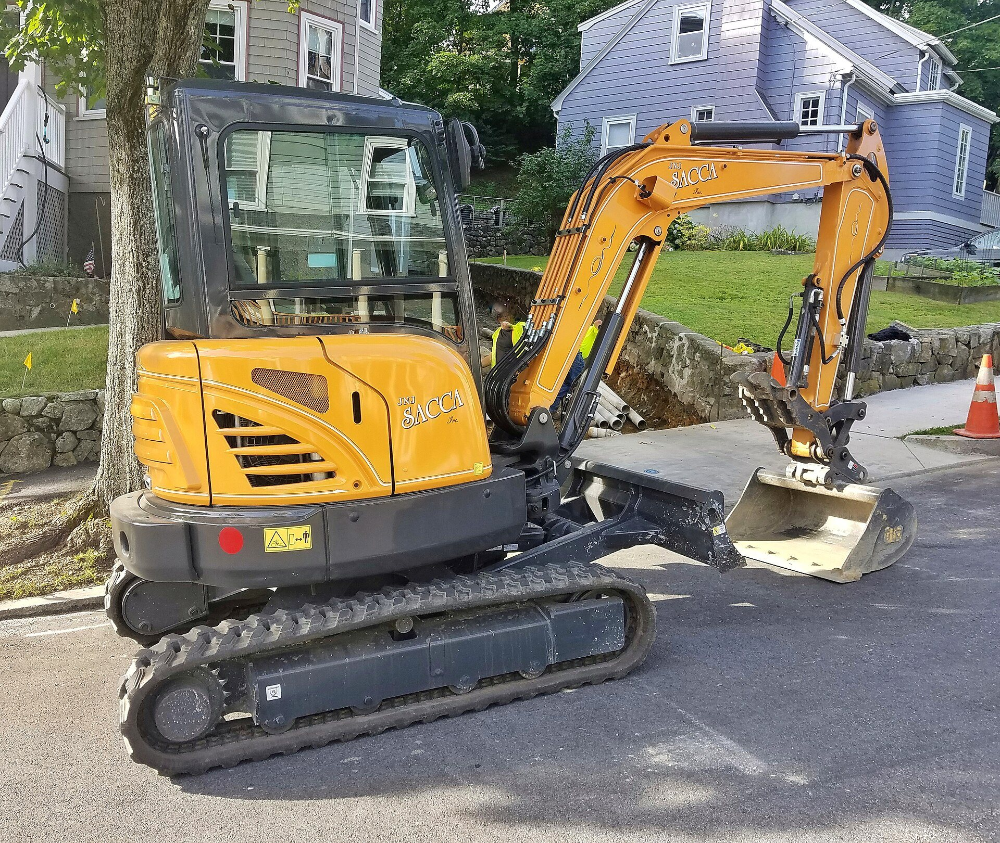
Digging is just the beginning! Excavators can swap their bucket for other tools. A grapple grabs logs and debris. A hydraulic breaker smashes concrete like a giant jackhammer. An auger drills holes into the ground. One machine, many jobs!
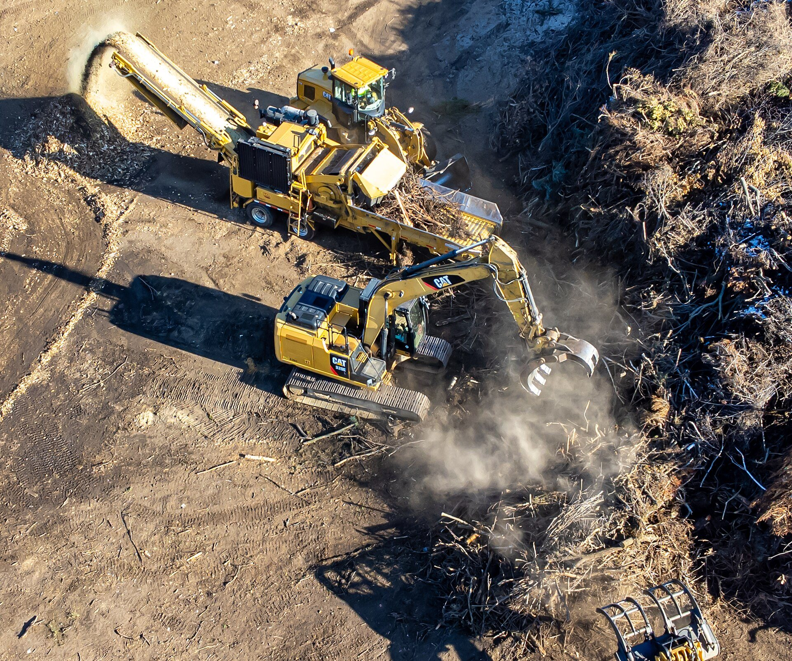
On a busy construction site, excavators work as part of a team. They scoop up dirt and load it into dump trucks that carry it away. Bulldozers push earth flat while loaders scoop up loose gravel. Together they build roads, bridges, and buildings.
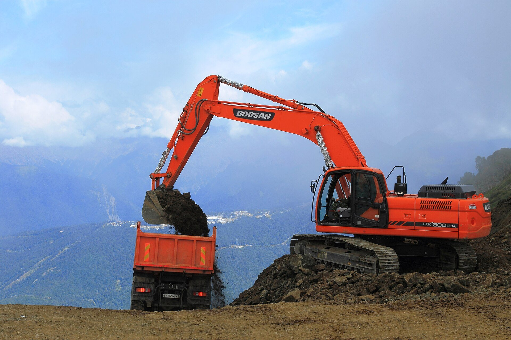
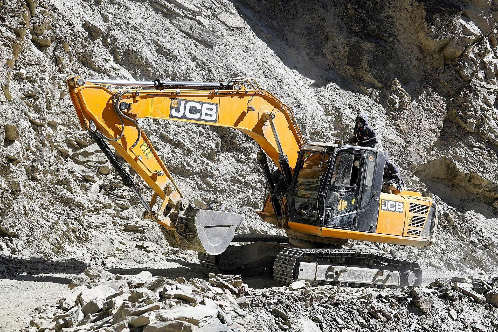
Excavators work all over the world! They build roads through mountains in India, dig foundations in cities like Singapore, and construct highways in Europe. Wherever something big needs to be dug, moved, or knocked down, you will find an excavator ready to work.
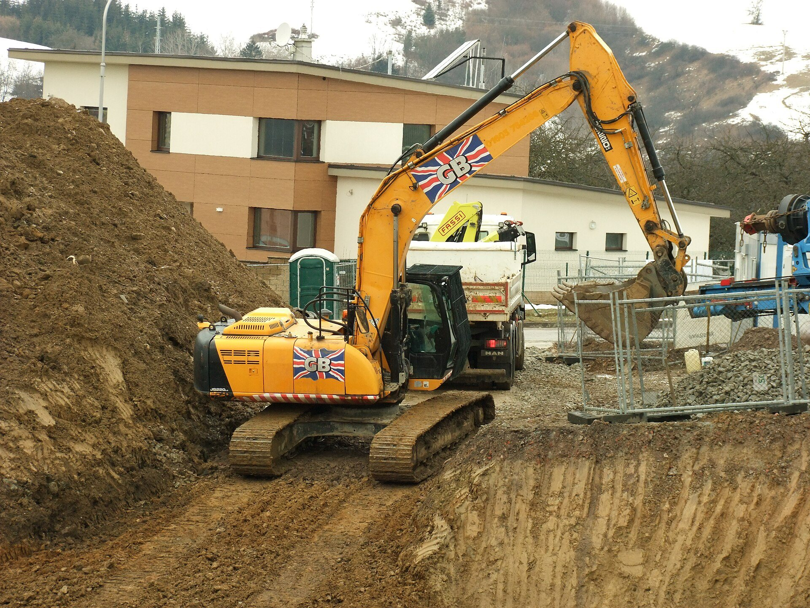
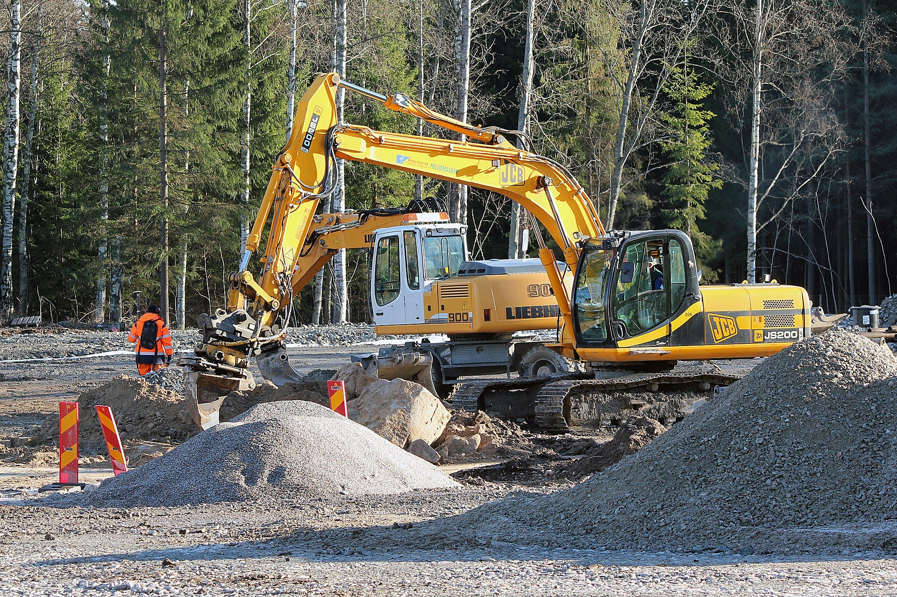
Next time you pass a construction site, look for the excavators! Watch the boom swing, the bucket scoop, and the tracks crawl. These incredible machines can dig, lift, smash, and grab -- and the people who drive them make it all look easy.